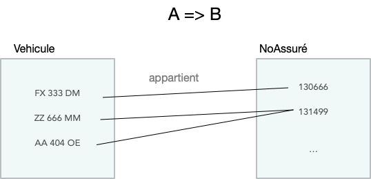
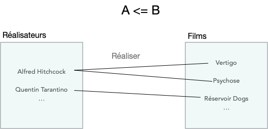
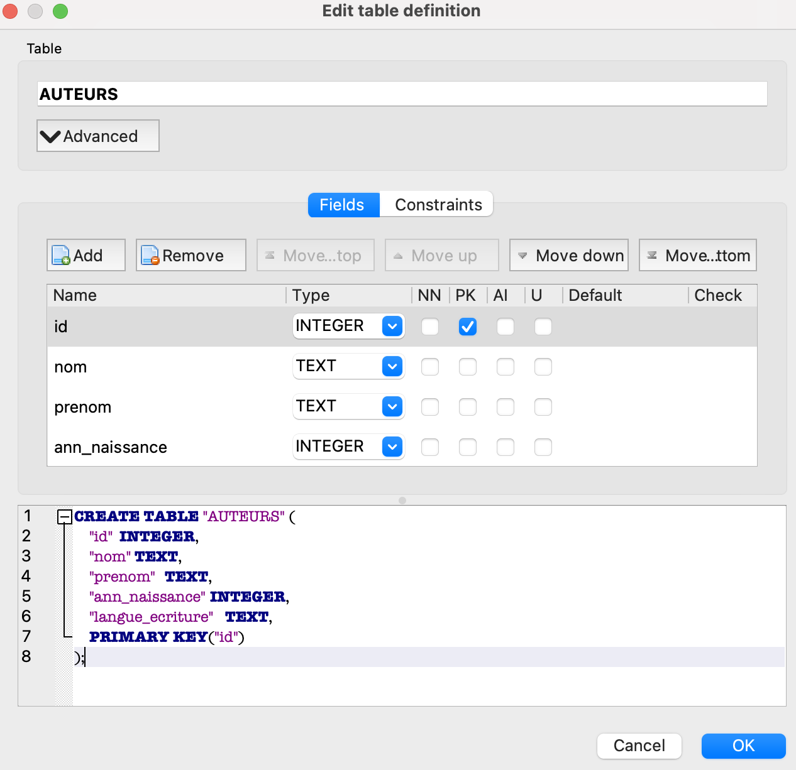
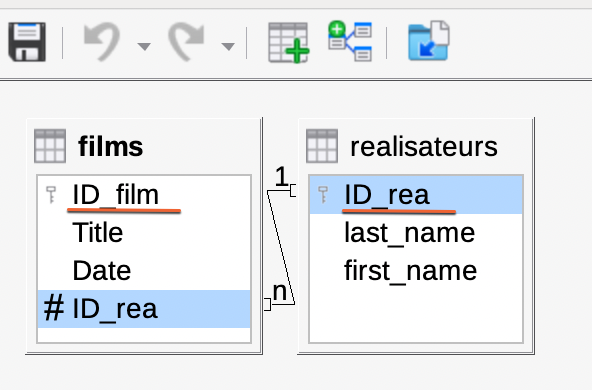

bases de donnees relationnelles
Plan du cours:
Le langage de requêtes:
- illustration des actions sur une table avec un tableur: les prix Nobels. Opérations de recherche, filtre et tri sur une table: Lien
- Cours langage SQL et TD sur une base de données de prenoms: Lien, exercices: pdf
La structuration des données:
- Bases de données, règles pour construire une BDD en plusieurs tables, TP sur la creation d’une BDD cinéma (Base de Libre Office): Lien
- Problèmes d’intégrité, modele entité-relation (2): Lien, cours pdf et exercices
- SGBD, gestion de l’accès concurentiel, Lien
Travaux pratiques
- TP requêtes sur une table de prenoms: Lien
- TP sur la gestion d’une base de données de romans de sciences fiction, utilisant SQLite Browser
- TP sur le langage SQL avec des requetes sur une base de données. Différents thèmes sont proposés : Lien
- enquete de police
- villes du monde
- séries Netflix
- exoplanètes
- TP sur la creation d’un serveur avec gestion d’un formulaire en python/SQL: page 6
Bases de données relationnelles
Une base de données est une collection de données qui vont être partagées entre plusieurs services, serveurs, utilisateurs.
Le modèle entité-association
La première étape pour aboutir à un modèle permettant de stocker les données dans une base consiste à identifier les objets et définir leurs liens.
Cette modélisation repose sur des principes mathématiques mis en avant par E.F. Codd (1923 - 2003, un informaticien britannique), et c’est cette modélisation qui est implémentée dans les bases de données.
Entité
on désigne par entité tout objet identifiable et pertinent pour l’application. Par exemple, pour la base de donnée précédente, les entités sont:
- Films: les films
- Réalisateurs: les réalisateurs
Pour chacune des entités, les individus ou objets ont en commun les même propriétés. Ce sont des tables, aussi appelées relations.
Attributs
Les entités sont caractérisées par des propriétés appelées attributs. Un attribut est désigné par un nom et prend ses valeurs dans un domaine énumérable. (notion à rapprocher du type en Python).
On exprime ici chaque attribut par son couple nom: domaine (domaine = type). Ces attributs doivent être insécables, ce qui empêche d’en choisir un du genre adresse (qui se decomposerait alors en n° + rue + ville).
Pour l’entité Films, ces attributs sont Titre et Annee.
Domaines
Les valeurs mises dans une cellule sont élémentaires. Il ne peut s’agir de types construits comme des listes.
- INT ou INTEGER : un entier
- FLOAT(x) : un nombre décimal avec x définissant la précision (nombre de bits de codage de la mantisse)
- REAL est un synonyme standard de FLOAT(24)
- CHAR(n) : chaine d’au plus n caractères
- VARCHAR(n)
- DATE une date
Association
Une association représente un lien entre les entités.
Il y a un lien représenté par le verbe a réalisé entre les entités Réalisateurs et Films.
On distingue:
- L’association binaire fonctionnelle: chaque occurence de l’entité A est liée à au plus une occurence de l’entité B. C’est équivalent à dire A=>B (la connaissance de A détermine celle de B). Dans ce cas, c’est la table A qui possède un attribut FOREIGN KEY qui pointe vers un attribut clé primaire de la table B.

association binaire fonctionnelle
- L’association non fonctionnelle: Une occurence de A peut être liée à plus d’une occurence de B.

association binaire NON fonctionnelle
Vocabulaire employé dans le domaine des bases de données
Voici l’ensemble des mots utilisés, avec leur correspondance
| Terme du modèle | Terme de la représentation par table |
|---|---|
| Relation | Table |
| n-uplet | ligne |
| Nom d’attribut | Nom de colonne |
| Valeur d’attribut | Cellule |
| Domaine | Type |
La structuration des données
Clé (ou identifiant)
Une clé est un attribut d’une relation.
clé primaire : une clé conçue pour identifier de manière unique les éléments d’une table. Si un attribut est considéré comme clef primaire, on ne doit pas trouver dans toute la relation 2 fois la même valeur pour cet attribut.
Dans la situation fréquente où on a du mal à déterminer quelle est la clé d’un type d’entité ; on crée un identifiant abstrait appelé id (un numéro séquentiel) indépendant de tous les autres attributs.
Dans une table, l’un des attributs peut être la clé primaire d’une autre table. Il s’agit alors d’une clé étrangère. Cet attribut permet de faire reference à un enregistrement dans une autre table, et caractérise parfaitement cette autre entité.
Exemple: idMES est la clé étrangère dans la relation Films:
| Titre | Annee | idMES |
|---|---|---|
| Hana-bi | 1997 | 1 |
| Big fish | 2003 | 2 |
| Edward aux mains d’argent | 1990 | 2 |
La relation Réalisateur:
| idMES | NomMES | PrenomMES | AnneeNaiss |
|---|---|---|---|
| 1 | Kitano | Takeshi | 1947 |
| 2 | Burton | Tim | 1958 |
| 3 | Tarantino | Quentin | 1963 |
La base de données doit se conformer aux contraintes d’intégrité référentielles:
Contraintes d’intégrité
Une contrainte d’intégrité est une règle qui définit la cohérence d’une donnée ou d’un ensemble de données de la BD.
Les contraintes d’intégrité liées aux clés primaires et étrangères sont:
- Contrainte de relation: chaque relation doit comporter une clé primaire.
- Clé etrangère: traduit une association. Elle doit être la clé primaire de l’autre relation à laquelle elle se réfère. Cette autre relation doit contenir l’élément auquel on veut se référencer AVANT de faire référence.
- Modification: on ne doit pas faire de modification de la clé primaire d’une occurence si celle-ci est liée.
En pratique, ces contraintes sont définies au moment de la création d’une table.
PRIMARY KEY : contrainte de clé primaire. Définit l’attribut comme la clé primaire
FOREIGN KEY : contrainte de clef étrangère. Assure l’intégrité de référence. Cette clé étrangère n’est pas primaire pour la relation étudiée mais elle est la clé primaire d’une autre relation.
En option, on peut ajouter des contraintes d’unicité ou de validité avec UNIQUE ou CHECK, ou autres:
NOT NULL: contrainte d’obligation de valeur. Les éléments de la colonne doivent forcément être renseignés
UNIQUE : la contrainte d’unicité, permet de s’assurer qu’une autre clef pourrait remplacer la clef primaire: interdit que deux tuples de la relation aient la même valeur pour l’attribut.
REFERENCES nom table (`nom colonne) : contrôle l’intégrité référentielle entre l’attribut de la table et ses colonnes spécifiées
CHECK (condition) : contrainte de validation. Il s’agit d’une assertion, qui contrôle la validité de la valeur de l’attribut spécifié dans la condition. Permet de restreindre les valeurs de la-les colonnes qui la-les composent.

creation de la table AUTEURS sous sqldbrowser
D’après la règle énoncée sur la contrainte de clé étrangère, la table LIVRES doit être créée APRES celle AUTEURS (à cause de la contrainte REFERENCES):
Schéma d’une relation
Une relation possède un nom, et se compose de colonnes désignées par un nom d’attribut avec des valeurs d’un certain domaine.
Le schéma d’une relation: peut être représenté par un diagramme (une table), donnant les noms des relations, les attributs, leur domaine, et la mention de la clé primaire. Mais on préfère donner ce schéma sous forme d’un ensemble de tuples: $S = ((A_1,domaine_1, (A_2,domaine_2) ...(A_n,domaine_n))$ où les $A_i$ sont les attributs.
Exemple: le schéma de la relation Films est:
films((id_film,int),(titre,str),(date,int),(id_rea,int))
Lorsqu’une base de données comporte plusieurs tables, l’ensemble des schémas de ces relations s’appelle le schéma relationnel de la base de données.
Donner le schéma relationnel: Un schéma relationnel est un diagramme. On y représente les noms des relations, les attributs, leur domaine, les clés primaires soulignées et les clés étrangères précédées d’un # dans des tableaux, puis faire une flèche pour indiquer de quelle table la clé étrangère est la clé primaire.
schéma relationnel de la base de données définie plus haut sur les Films et Réalisateurs de cinéma:

schéma relationnel de la base de données films-realisateurs, base de libreoffice
TP Browser SQL: Base, SQLite Browser, Access
Base de données sur FILMS et REALISATEURS
voir TP à la page suivante
Compléments
Définitions
Le degré d’une relation est le nombre d’attributs (ou de colonnes) et le cardinal d’une relation est le nombre de tuples (ou de lignes).
Le schéma d’une relation: peut être représenté par un diagramme (une table), donnant les noms des relations, les attributs, leur domaine, et la mention de la clé primaire. Mais on peut aussi donner ce schéma sous forme d’un ensemble de tuples: $S = ((A_1,domaine_1, (A_2,domaine_2) ...(A_n,domaine_n))$ où les $A_i$ sont les attributs.
Exemple: le schéma de la relation Films est: $$Film((Titre,str),(Annee,int))$$
Une table R, ou relation est un ensemble fini de n-uplets $(x_1, x_2, ... x_n)$ où les xi prennent leurs valeurs dans Ai.
Une occurence (ou élément d’une table R) est une ligne dans un tableau. On l’appelle aussi un enregistrement, ou un n-uplet.
Lorsqu’une base de données comporte plusieurs tables, l’ensemble des schémas de ces relations s’appelle le schéma relationnel de la base de données.
Donner le schéma relationnel: Une relation est un objet abstrait, on peut la représenter de différentes manières. Une représentation naturelle est le graphe entre les entités, représentant les relations et les associations.
Une association binaire entre les entités $E_1$ et $E_2$ est un ensemble de couples ($e_1$, $e_2$) avec $e_1$∈$E_1$ et $e_2$∈$E_2$.
Cette association peut être représentée à l’aide d’une clé etrangère, ou peut necessiter la création d’une nouvelle relation (et donc d’un nouveau tableau) pour répondre aux contraintes d’intégrité.
Règles de conception d’une base de données
- Unicité: Toute entité donne lieu à une table dont la clé primaire est l’identifiant de l’entité.
- Toute association binaire fonctionnelle est implémentée par la presence d’une clé étrangère dans la table, qui représente l’entité origine de la dépendance fonctionnelle.
- Normalisation: Toute association non fonctionnelle génère une nouvelle table dont la clé primaire est l’ensemble des clés primaires des tables qu’elle relie. Un exemple d’association non fonctionnelle, c’est lorsqu’une information apparait plusieurs fois, et necessiterait de modifier plusieurs lignes s’il fallait effectuer un changement.
Remarque: la clé d’une association (binaire) entre une entité E1 et une entité E2 est le couple constitué de la clé e1 de E1 et de la clé e2 de E2.